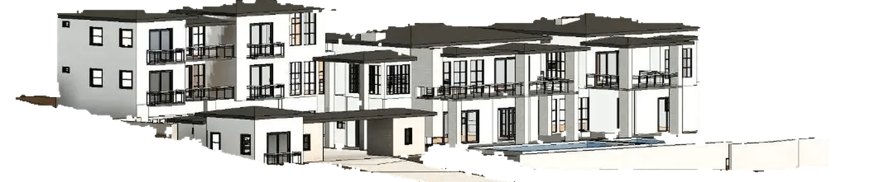

No render anywhere. The opener is one of the studio's real permit sheets, big enough to read the elevations on it, and the screen is banded across instead of split down the middle: the drawing above, a dark title strip below carrying the words. What the studio actually sells is the sheet.
The same job exists three times over: as a mass, as a render and as a drawing. Three plates, one for each, and the headline runs on one line straight across all three so the type crosses the plate edges. The crossing is what gives it depth.
Every project is resolved three times before it reaches a plan reviewer, so nothing is discovered on site.
No photograph and no rectangle anywhere. The massing model is knocked out of its background, so it stands on the page as an object instead of a screenshot in a box. It sits in front of the headline and cuts the bottom off it, and that overlap is the depth.
We turn a property and an idea into a home that is resolved on paper, modeled, documented and permitted.

Massing studyThe quiet one. The night render is the studio's most atmospheric asset and nothing had used it. Almost all of this screen is sky. Small type set low, one thing to press. It is the opposite of every other option here, which is the point of having it in the set.
Residential architectural drafting in Gilbert, Arizona. Permit sets, as builts, additions and custom homes.
The whole screen is drawn as a sheet: a border inset from the edge with corner marks, the render sitting in the drawing field, and a real title block ruled along the foot with the headline in the largest cell. The navigation sits outside the border, the way it would on a real sheet.
A property and an idea, resolved on paper and permitted before the first shovel hits the ground.
Say the letter and it replaces the opener in direction-4-trace.html. If none of these are right either, say which part is wrong, the asset, the composition or the words, and the next set starts from that instead of guessing again.